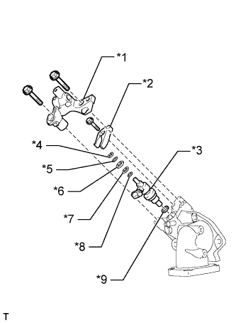

ДОПОЛНИТЕЛЬНАЯ ФОРСУНКА ОТРАБОТАВШЕГО ТОПЛИВА > СНЯТИЕ |
| 1. ОТСОЕДИНИТЕ ПРОВОД ОТ ОТРИЦАТЕЛЬНОГО ВЫВОДА АККУМУЛЯТОРНОЙ БАТАРЕИ |
| 2. СНИМИТЕ ЗАЩИТУ КАРТЕРА ДВИГАТЕЛЯ № 1 В СБОРЕ |
Выверните 4 болта и снимите защиту картера двигателя № 1.
| 3. СЛЕЙТЕ ОХЛАЖДАЮЩУЮ ЖИДКОСТЬ ДВИГАТЕЛЯ |
Ослабьте пробку сливного крана радиатора.
 |
Слейте охлаждающую жидкость, сняв пробку расширительного бачка, а затем с помощью ключа снимите вентиляционную пробку.
Ослабьте пробку сливного крана блока цилиндров.

| *1 | Бачок радиатора | *2 | Вентиляционная пробка |
| *3 | Пробка сливного крана радиатора | *4 | Пробка сливного крана блока цилиндров |
| 4. СНИМИТЕ ВЫХОДНОЙ ПАТРУБОК ТУРБИНЫ |
| 5. СНИМИТЕ ДОПОЛНИТЕЛЬНУЮ ФОРСУНКУ ПОДАЧИ ТОПЛИВА В ВЫПУСКНУЮ ТРУБУ В СБОРЕ |
|  |
Выверните 2 болта и снимите держатель форсунки.
| *1 | Держатель форсунки |
| *2 | Фиксатор корпуса форсунки № 1 |
| *3 | Дополнительная форсунка подачи топлива в выпускную трубу |
| *4 | E-образное кольцо |
| *5 | Опорное кольцо № 3 |
| *6 | Кольцевое уплотнение |
| *7 | Опорное кольцо № 2 |
| *8 | Опорное кольцо № 1 |
| *9 | Прокладка |
Выверните винт с помощью торцевого ключа с головкой "TORX" T40 и снимите шайбу и фиксатор корпуса форсунки № 1.
Снимите дополнительную форсунку подачи топлива в выпускную трубу и прокладку.
Снимите разрезное уплотнение, кольцевое уплотнение и 3 опорных кольца с дополнительной форсунки подачи топлива в выпускную трубу.